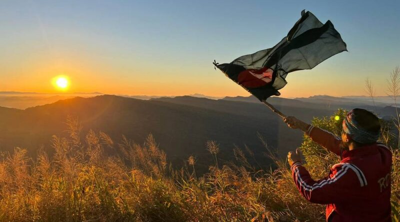

Keokradong A peak located in the Bandarban district, northeast of the country, the close border to Burma with a altitude of 1,230 metres (4,035 ft). It is actually located near Thaikhong para of the Remacri Mouja. Keokradong is the third highest mountain Peak located in South-Eastern Bangladesh. It was long claimed as the highest peak there, a mistaken information that still features in respected sources Although it is widely reported to be the highest point in Bangladesh at 1230 metres, recent SRTM data, GPS readings and Russian topographic mapping show that its true height is less than 1,000 metres.
On the top of Keokradong there is a small shelter and a signboard put up by the Bangladeshi military proclaiming the altitude to be 3,172 feet. Garmin GPS recorded 974 metres (3196 feet) at this location, a measurement consistent with Russian topographic mapping and SRTM data. It is at 21°57'00"N 92°30'53"E. USGS and Russian mapping dispute the claim that this is the location correctly named Keokradong; they show Keokradong at an 883m summit further north. The scenery of these hilly impassable roads is really very pleasant. Anyone willing to visit the peak, must go there on foot from Baga lake under Ruma by crossing hilly high terrace from Ruma Upazilla Head quarter.There is a controversy about the highest point of Bangladesh, and some sources indicate the Mowdok Mual as the most elevated peak of the country. In February 2006 a GPS reading of 1,064 metres was recorded on this summit by English adventurer Ginge Fullen. The location he recorded, 21°47'11"N92°36'36"E21.78639'N 92.61'E, accurately matches the location given by Russian topographic mapping and SRTM data, although these sources show its height to be slightly lower, at 1,052 metres. Recently two trekking clubs counted the height of "Saka Haphong" as 3,488 and 3,461 feet respectively. Any of these two figure would make it the highest mountain in Bangladesh exceeding the height of Keokaradong, which is 3,172 feet high.
Tazing Dong (তাজিং ডং) is the highest mountain peak in Bangladesh. It is also known as Victory (Bijoy). In the local language, Tajing means Big and Dong means Mountain. Together the Big Hills or Mountains or TazingDong. It is located in Ruma upazila of Bandarban district. According to official data, Keokradong was the highest mountain in the country. But research shows that not Keokradong, but TaZing Dong or Vijay is the highest mountain in the country. The height of Tazing Dong mountain is about 1231 meters. We know Keokradong is 1230 meters. Currently, a private company called Natural Adventures claims Saka Haphong Mountain as the highest mountain. However, it has not yet received official recognition. At one time it was difficult to reach Tazing Dong. Nowadays a lot of tourists flock to Tazing Dong to enjoy the beauty of nature. Many more tourists are seen in winter than in other seasons.
